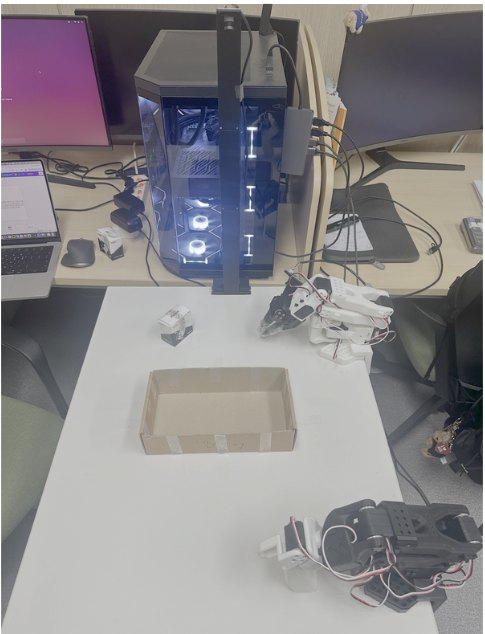
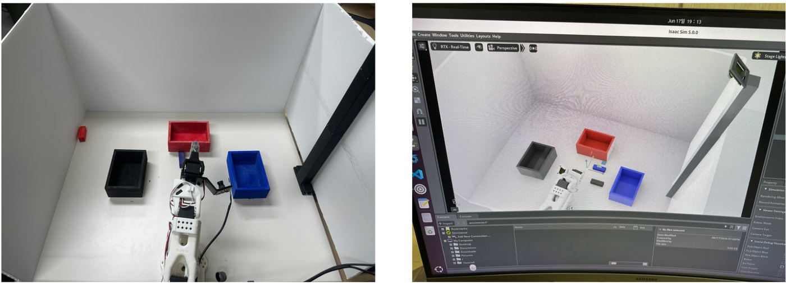
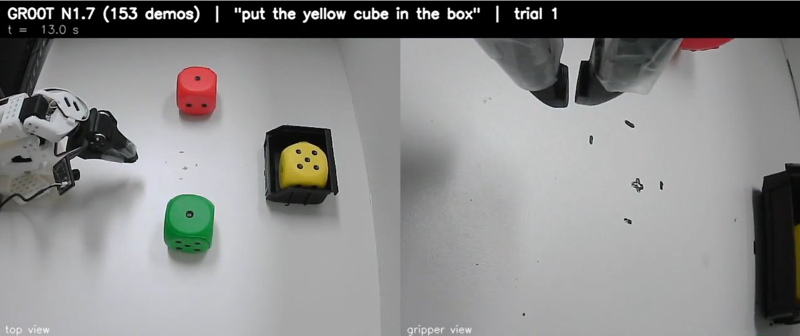
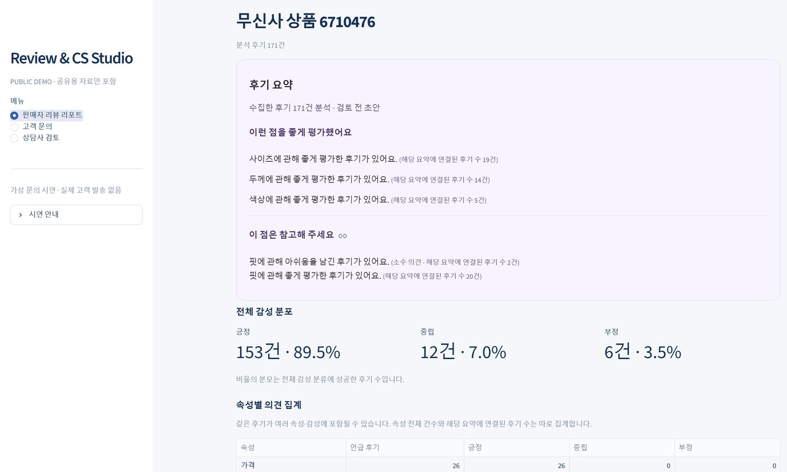
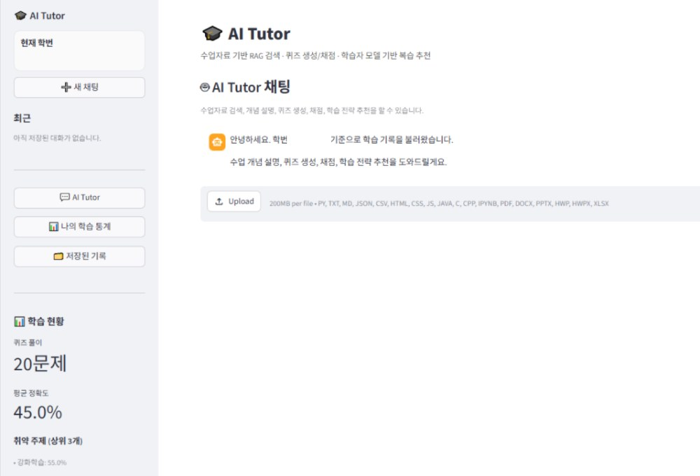
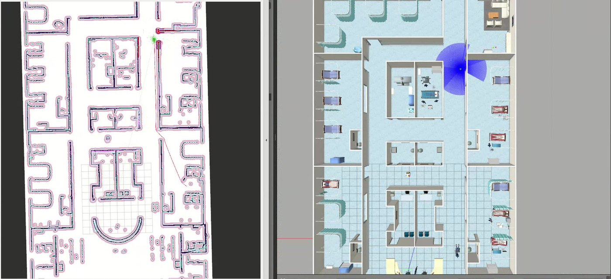
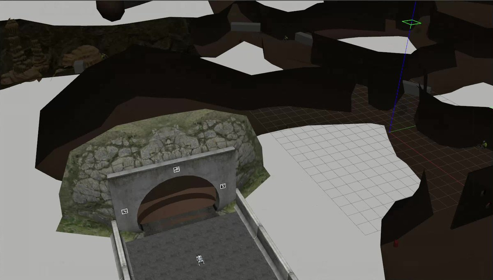
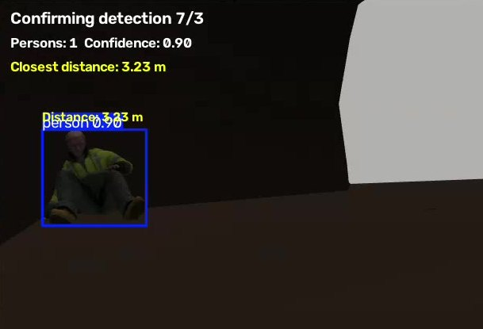
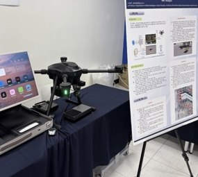
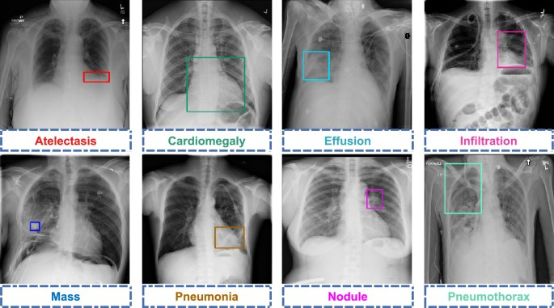

프로젝트 · 연구
로봇 팔(SO-ARM101) 기반 VLA 자율 제어진행 중
실물 로봇 팔이 언어 지시대로 물체를 집도록 만들어 성공률 91.7% 달성
팀 프로젝트 · 데이터 수집 · 모델 학습 · 평가 설계
91.7%실물 조작 성공률 (36회 중 33회)
0회지시와 다른 물체 선택 (실패 3회는 모두 파지 실패)
- 왜
- 피지컬 AI의 핵심인 VLA 모델이 실제 로봇에서 언어 지시대로 동작하는지 직접 검증하기 위해 시작
- 문제
- 3색 블록 과제에서 SmolVLA가 빨강 지시에 파랑 블록을 집고, 검정 블록은 잡지 못하는 등 언어 지시와 다른 물체를 선택
- 목표
- 언어 지시와 같은 물체를 집어 통에 넣는 성공률을 실물 로봇에서 수치로 확인
- 데이터
- 원격 조작 시연 데이터 (top·gripper 카메라 영상 + 관절값) · ACT 50→100개, SmolVLA 30→90개, GR00T 153개
- 해결
- 리더–팔로워 원격 조작으로 top·gripper 영상과 관절값을 수집하고, 카메라 시점·파지 위치가 매번 다르던 수집 방식을 일관되게 수정
- Isaac Sim에 실제 작업 공간을 동일하게 재현 (domain randomization 합성 데이터로 sim-to-real 격차를 줄이기 위한 기반)
- shortcut learning·visual attractor(When Vision Overrides Language) 등 선행연구로 원인을 검토하고 방해 물체 유무 비교 실험 설계
- 과제를 3색 정육면체 · 고정 위치 3곳 · 통 1개로 재설계하고 GR00T N1.7을 시연 153개로 학습
- 결과
- 실물 36회 평가 33회 성공(91.7%), 실패 3회는 모두 파지 실패로 지시와 다른 물체 선택 0회
구조리더암 원격 조작→영상·관절값 시연 수집→ACT · SmolVLA · GR00T 학습→언어 지시 입력→팔로워 로봇 동작 · 36회 평가
막혔던 곳과 해결
문제빨강 지시에 파랑 블록 선택, 검정 블록 파지 실패
→원인수집 일관성 부족(시점·파지 위치), 시각 단서가 언어보다 우세한 visual attractor 가능성
→해결수집 방식 통일, 과제 단순화(3색 정육면체·고정 위치 3곳), GR00T N1.7로 교체
→결과지시 오인 0회, 성공률 91.7%
다음 과제 고정 위치라 궤적 암기 가능성 → 위치 다양화 · 조도 변화 조건으로 일반화 검증

1 · ACT상자 넣기 · 시연 50→100개
2 · SmolVLA3색 블록 · 시연 30→90개 · 실제(좌)/Isaac Sim(우)
3 · GR00T N1.7 평가 — "put the yellow cube in the box" (top · gripper view)
LeRobotIsaac SimACTSmolVLAGR00T N1.7
이커머스 리뷰 분석 및 정책 기반 CS Agent진행 중
리뷰 감성분류 Macro F1 0.751 → 0.808, 판매자 리포트와 CS 답변 초안 자동화
0.808감성분류 Macro F1 (Dev · KoELECTRA)
+0.057TF-IDF 기준선 대비 (0.751 → 0.808)
- 왜
- 판매자가 매일 쌓이는 리뷰·문의를 직접 읽어야 하는 부담을 줄이고, 반복되는 불만을 수치로 보여 주기 위해 시작
- 문제
- 리뷰가 많을수록 사이즈·품질 같은 반복 불만을 정량적으로 파악하기 어렵고, 문의마다 정책을 찾아 답하는 데 시간이 듦
- 목표
- 리뷰 감성·속성을 자동 집계하고, 정책 근거가 붙은 CS 답변 초안을 상담사에게 제공
- 데이터
- AI Hub 여성의류 리뷰 17,500건 (리뷰 ID 기준 Train/Dev/Test 분리) · 가상 쇼핑몰 정책 문서
- 해결
- AI Hub 여성의류 리뷰 17,500건을 리뷰 ID 기준으로 학습·검증·시험 데이터 분리
- TF-IDF 기준선 → KLUE-BERT → KoELECTRA 순으로 감성분류 모델 비교
- Qwen2.5로 속성·감성·원문 근거를 추출해 판매자 리포트 대시보드 구성
- 가상 쇼핑몰 정책을 RAG로 검색해 답변 초안을 만들고, 상담사 검토·수정 후 게시하는 CS 흐름 구현
- 결과
- 감성분류 Macro F1 0.751 → 0.808(TF-IDF 대비 +0.057). 상품 후기 171건을 요약·감성 분포·속성별 집계로 한 화면에 제공. 속성 탐지·답변 정확성 평가는 후속 과제
구조리뷰 데이터→KoELECTRA 감성분류→Qwen2.5 속성·근거 추출→판매자 리포트 대시보드→정책 RAG → CS 답변 초안
다음 과제 속성 탐지·답변 품질 개선, 사람 검토 기반 답변 정확성 평가

판매자 리뷰 리포트 — 후기 171건 요약 · 감성 분포 · 속성별 집계 (공개 데모)
PythonKoELECTRAQwen2.5RAGStreamlit
수업자료 기반 맞춤형 AI Tutor Agent
역할별 모델 분리로 응답 시간 16.0초 → 8.4초, 속도와 정확도의 절충까지 분석
47.3%↓평균 응답 시간 (53문항 · 16.0초 → 8.4초)
13/13Agent 기능 검증 통과 (자동 검증)
- 왜
- 여러 형식의 수업자료에서 필요한 내용을 찾고, 내가 무엇을 모르는지 확인하기 어렵다는 학습자 관점의 불편에서 시작
- 문제
- 모든 요청을 단일 32B 모델이 처리하면 질의응답·퀴즈·채점 모두 응답이 느려 학습 흐름이 끊김
- 목표
- 기능은 유지하면서 응답 시간을 줄이고, 그 대가로 무엇을 잃는지 수치로 확인
- 데이터
- 수업자료(PDF·문서 등 여러 형식) · 학생별 퀴즈 기록 · 비교용 질문 53개
- 해결
- 수업자료 RAG와 질문 의도별 도구 라우팅으로 질의응답·퀴즈 생성·채점 기능 구현
- 학생별 퀴즈 기록과 개념 맵으로 취약 주제를 진단하고 복습 추천
- 단일 32B와 역할별 구성(라우터 7B · 답변 14B · 퀴즈 32B)을 같은 53문항으로 비교
- 결과
- 평균 응답 16.0초 → 8.4초(약 47.3% 단축). 대신 의도 분류 정확도가 100% → 92.45%로 낮아져, 라우터 오분류가 잘못된 도구 호출로 이어지는 절충을 확인. Agent 기능 검증 13/13 통과
구조질문 입력→라우터 7B 의도 분류→답변 14B · 퀴즈 32B 도구 호출→수업자료 RAG 검색→답변 · 퀴즈 · 채점 · 복습 추천
막혔던 곳과 해결
문제단일 32B로 모든 요청 처리 시 응답이 느림
→원인간단한 의도 분류까지 가장 큰 모델이 처리
→해결역할별로 모델 크기를 나눠 배치
→결과응답 16.0초 → 8.4초, 대신 의도 정확도 100% → 92.45%
다음 과제 라우터 오분류를 줄이는 신뢰도 기반 폴백 설계

AI Tutor 앱 — 자료 검색 · 퀴즈 생성/채점 · 학습 현황 (학번 가림)
PythonQwen2.5RAGStreamlitLangSmith
ND1 캡스톤 — 병원 백신 배송 로봇
자연어 한 문장으로 약국 픽업부터 병실 배치까지 수행하는 배송 로봇
팀 프로젝트 · 팀 공동 수행
병실 4 · 약국 1배송 지점 (좌표 2곳에서 확장)
백신 4종명령 매핑 (LLM + 폴백 파서)
- 왜
- 의료진이 "301호 환자에게 A형 독감 백신 가져다줘"처럼 말하면 로봇이 배송하는 병원 물류 시나리오를 구현하기 위해 시작
- 문제
- 제공된 TurtleBot4 + Ignition + Docker 기반 키트를 그대로 쓸 수 없었고, LLM 응답이 실패하면 미션 전체가 멈추는 구조
- 목표
- 자연어 명령 한 번으로 픽업부터 배치까지 끊기지 않고 수행
- 데이터
- AWS RoboMaker Hospital World · 고정 지도(map_server) · 자연어 명령
- 해결
- TurtleBot3 + Gazebo classic + 네이티브 ROS 2 Humble로 이식, AWS Hospital World에 시나리오 구성
- LLM이 명령을 해석하고, 실패 시 규칙 기반 폴백 파서로 자동 전환
- Coordinator FSM이 계획→이동→픽업→운반→배치를 Nav2·픽업 노드와 조정
- 좌표 2곳 픽앤플레이스를 병실 4개 + 약국 1개 · 백신 4종 매핑으로 확장, Gazebo 서비스 응답 유실은 비동기 콜백으로 해결
- 결과
- 자연어 명령 한 번으로 약국 픽업 → 병실 배치 전 과정이 동작하는 시뮬레이션 완성 및 데모 영상 제작. LLM 키가 없거나 해석에 실패해도 폴백으로 미션 유지
구조자연어 명령→LLM 해석 (실패 시 폴백)→Coordinator FSM→Nav2 이동 · 픽업/배치→병실 배송 완료

RViz 병원 지도(좌)와 Gazebo AWS Hospital World(우) — 배송 중인 TurtleBot3
TurtleBot3GazeboROS 2 HumbleNav2AMCLLLM(Groq)FSM
ND3 캡스톤 — 동굴 재난 수색·구조 로봇
GPS 없는 동굴에서 지도 작성 · 자율주행 · 조난자 탐지까지 수행한 사족보행 로봇
팀 프로젝트 · 팀 공동 수행
3프레임 · 1m탐지 확정 · 접근 정지 조건 (YOLO11n + RGB-D)
conf 0.90조난자 탐지 예시 (거리 3.23 m 추정)
- 왜
- 사람이 들어가기 위험한 동굴 재난 현장에서 로봇이 먼저 들어가 조난자를 찾는 시나리오를 구현하기 위해 시작
- 문제
- GPS가 없는 동굴에서 사족보행 오도메트리가 발산하고, 바닥 반사점이 장애물로 잡혀 경로 계획이 막힘
- 목표
- 지도 작성 → 자율주행 → 조난자 탐지·접근·정지와 위치 보고까지 한 흐름으로 수행
- 데이터
- Gazebo 동굴 월드(DARPA SubT 스타일) · 2D/3D LiDAR · RGB-D 영상
- 해결
- Go2(CHAMP 보행 제어)에 2D·3D LiDAR, RGB-D 카메라 구성
- slam_toolbox로 지도 작성 후 저장 지도 + AMCL + Nav2로 자율주행
- YOLO11n이 3프레임 연속 탐지하면 1m 이내로 접근해 정지, depth·카메라 파라미터·TF로 조난자 지도 좌표 계산
- 오도메트리 발산은 ground-truth 오도메트리로 우회, 코스트맵 최소 장애물 높이 0.08m·AMCL 파라미터 튜닝
- 결과
- 동굴 지도 작성 → 자율주행 → 조난자 탐지·접근·정지를 시연 영상으로 확인하고, 조난자 위치를 지도 좌표로 실시간 발행(추정 오차 수십 cm ~ 1m). 프런티어 기반 완전 자율 탐사는 남은 과제
구조LiDAR · RGB-D 입력→slam_toolbox 지도 작성→AMCL + Nav2 자율주행→YOLO11n 조난자 탐지→접근·정지 · 지도 좌표 발행

Gazebo 동굴 월드 입구의 Unitree Go2
YOLO11n 조난자 탐지 — confidence 0.90 · 거리 3.23 m
Unitree Go2Gazeboslam_toolboxNav2YOLO11nRGB-D
RISE Project — LLM 기반 드론 지능형 제어
말로 내린 명령을 드론 제어 명령으로 바꾸는 STT–LLM 파이프라인
팀 프로젝트 · 파이프라인 · 시나리오 개발 참여
- 왜
- 조종기 없이 음성·자연어만으로 드론을 운용하는 현장형 제어 방식을 만들기 위해 참여
- 문제
- 사람의 자유로운 발화는 드론이 실행할 수 있는 정해진 제어 명령 형식과 맞지 않음
- 목표
- 음성 명령을 구조화된 드론 제어 명령으로 변환
- 해결
- STT로 인식한 음성을 LLM으로 구조화된 드론 제어 명령으로 변환하는 파이프라인 참여
- 실시간 정찰 · 자동 보고 시나리오 개발 참여
- 결과
- 음성·자연어 기반 드론 제어 시스템을 구축하고 성과 전시에서 기체·제어 화면·연구 포스터로 발표

성과 전시 — 드론 기체 · 제어 화면 · 연구 포스터
STTLLM
Chest X-ray 기반 질병 분류 모델 연구
클래스 불균형이 흉부 X-ray 질병 분류 성능에 미치는 영향 분석
- 왜
- 의료 데이터는 질병마다 사례 수 차이가 커서, 소수 질병을 놓치지 않는 모델이 필요하다는 문제의식에서 시작
- 문제
- 흉부 X-ray 데이터의 클래스 불균형으로 사례가 적은 질병의 예측 성능이 떨어짐
- 목표
- 불균형이 성능에 미치는 영향을 확인하고 대응 기법 적용
- 해결
- 클래스 불균형 데이터 기반 질병 분류 모델 구축
- 불균형 대응 기법을 적용해 클래스별 성능 비교
- 결과
- 클래스 불균형이 예측 성능에 미치는 영향을 분석하고 대응 기법 적용 결과를 정리

흉부 X-ray 질병 예시 — 출처: NIH ChestX-ray 데이터셋 (Wang et al., CVPR 2017)
PythonImage ClassificationClass Imbalance
Agent 도구 오류 복구 방식 비교 연구 (학사 졸업 논문)진행 중
Agent가 도구 오류를 만났을 때 어떻게 회복해야 하는가 — 복구 전략 비교
개인
- 왜
- AI Tutor Agent의 역할별 모델 배치 연구를 이어가던 중 선행연구와의 중복을 확인하고, Agent의 도구 오류 복구로 주제를 전환
- 문제
- LLM Agent가 도구 오류를 만나면 단순 재시도에 의존해 같은 실패를 반복하기 쉬움
- 목표
- 복구 방식별 차이를 공개 평가 환경에서 비교
- 해결
- 단순 재시도와 실행 기록 기반 대응 선택 등 복구 방식을 비교하는 실험 설계
- ToolMaze 공개 평가 환경에서 별도 실험 코드로 진행
- 결과
- 실험 진행 중
LLM AgentToolMazeQwen2.5